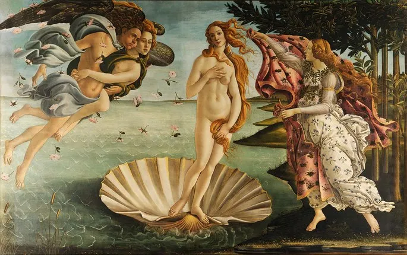

Renacimiento

El Renacimiento fue un movimiento cultural y artístico que surgió en Italia durante los siglos XIV y XV, y posteriormente se extendió por Europa. Se caracterizó por el renovado interés en la cultura, filosofía y arte de la antigua Grecia y Roma, así como por el desarrollo del humanismo, que colocó al ser humano y su capacidad de conocimiento en el centro del pensamiento.
Durante este periodo, artistas comenzaron a explorar nuevas técnicas de representación, como la perspectiva, el estudio de la anatomía, la proporción y el uso de la luz y sombra, buscando representar el mundo de una manera más naturalista. El Renacimiento marcó una transformación importante en la pintura, escultura y arquitectura, dejando obras que continúan siendo admiradas hasta la actualidad.
Características del Renacimiento
-
Humanismo
- El ser humano se convierte en el centro de interés.
- Se valoran la razón, el conocimiento y la educación.
- Se retoman ideas de filósofos de la antigua Grecia y Roma.
-
Perspectiva
- Se busca representar profundidad y distancia.
- Se utilizan puntos de fuga para dar sensación de tridimensionalidad.
- Los espacios se representan de manera más realista.
-
Naturalismo y proporción
- Se estudia la anatomía humana.
- Se busca representar cuerpos y rostros de manera realista.
- Se presta atención a las proporciones y al equilibrio de las figuras.
-
Inspiración clásica
- Se recuperan elementos artísticos de Grecia y Roma.
- Se utilizan columnas, arcos y formas arquitectónicas clásicas.
- Se retoman temas mitológicos y filosóficos.
-
Uso de la luz y sombra
- Se emplean contrastes para dar volumen a las figuras.
- Se crean transiciones suaves entre luces y sombras.
- Se busca dar profundidad y realismo a las pinturas.
-
Desarrollo científico y artístico
- Se relacionan el arte, las matemáticas y la ciencia.
- Se estudia la naturaleza mediante la observación.
- Los artistas experimentan con nuevas técnicas y materiales.
Artistas Destacados del Renacimiento

Leonardo da Vinci (1452–1519)
Leonardo da Vinci fue un artista, inventor, científico e investigador italiano considerado uno de los grandes representantes del Renacimiento. Se destacó por su curiosidad, sus estudios sobre anatomía, naturaleza, ingeniería y óptica, además de su capacidad para combinar ciencia y arte. En sus pinturas exploró la expresión humana, la perspectiva, la luz y las sombras, logrando una representación muy natural de sus personajes.

Miguel Ángelo Buonarroti (1475–1564)
Miguel Ángel fue un escultor, pintor, arquitecto y poeta italiano. Es reconocido por su extraordinario dominio de la anatomía humana, la representación del movimiento y la expresión emocional de sus figuras. Aunque destacó principalmente en la escultura, también realizó algunas de las pinturas más importantes del Renacimiento, especialmente en la Capilla Sixtina del Vaticano.

Rafael Sanzio (1483–1520)
Rafael fue un pintor y arquitecto italiano reconocido por la armonía, elegancia y equilibrio de sus composiciones. Su obra representa uno de los momentos de mayor desarrollo del Renacimiento, en el que se buscaba combinar belleza, proporción y claridad. Sus pinturas se caracterizan por composiciones ordenadas, figuras delicadas y una gran capacidad para representar escenas religiosas y temas filosóficos.

Sandro Botticelli (1445–1510)
Fue un pintor italiano de Florencia, reconocido por sus representaciones mitológicas y religiosas. Su estilo se caracteriza por figuras elegantes, líneas delicadas, composiciones armoniosas y una fuerte inspiración en la mitología clásica. Sus obras reflejan el interés renacentista por la belleza ideal y la culture de la antigua Grecia y Roma.
Obras destacadas

La Gioconda (Mona Lisa) - Leonardo da Vinci
Pintura al óleo sobre tabla de álamo, realizada entre 1503 y 1506. Es una de las obras más famosas del mundo, conocida por la enigmática sonrisa de su protagonista y su técnica innovadora en el uso del sfumato.

La ultima cena - Leonardo da Vinci
Una escena religiosa que destaca por la perspectiva y la expresividad de sus personajes.

La creacion de adan - Miguel Angel
El encuentro entre las manos de Dios y Adán se convirtió en uno de los símbolos más conocidos del arte occidental.

Nacimiento de Venus - Sandro Botticelli
Representa a Venus emergiendo del mar. Es un ejemplo importante de la recuperación de temas mitológicos clásicos.

La Madonna Sixtina - Rafael
Destaca por la composición de la Virgen y el niño, la armonía de las figuras y su delicadeza.